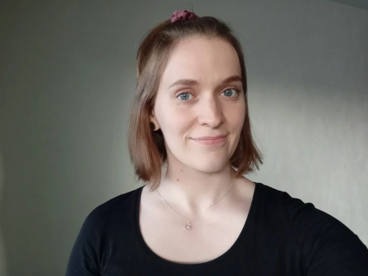
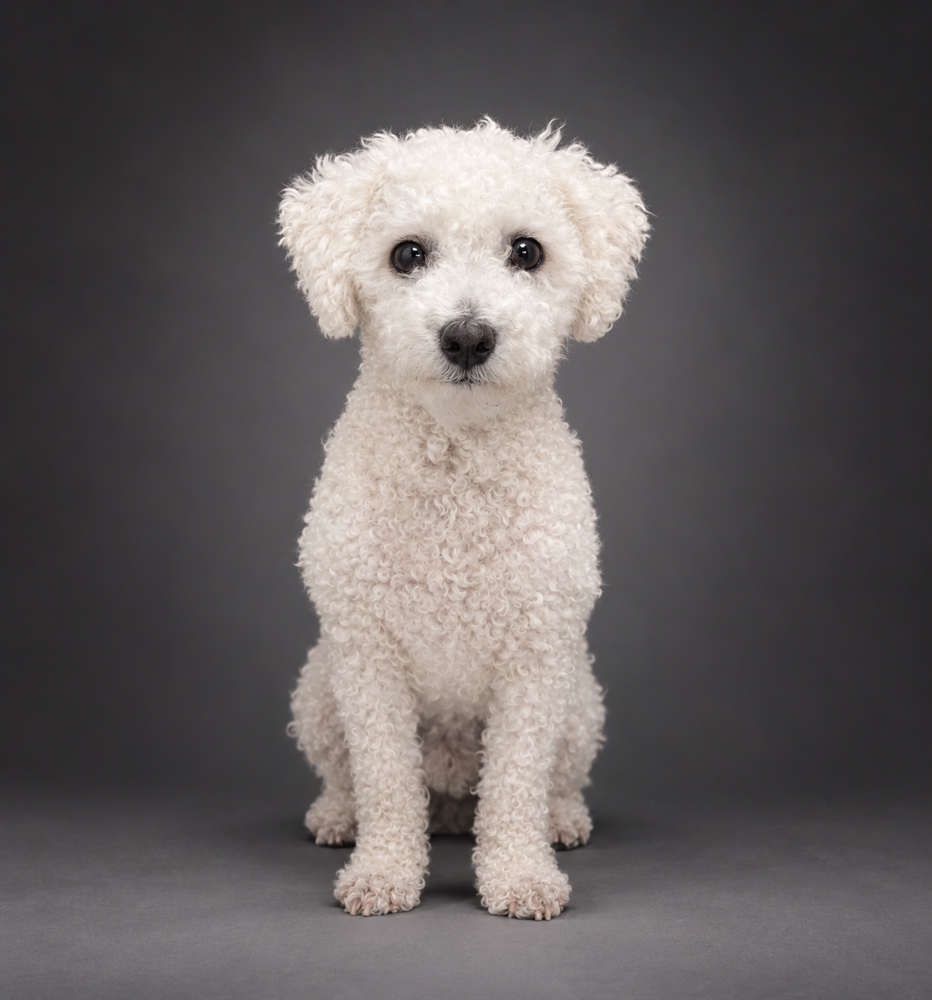
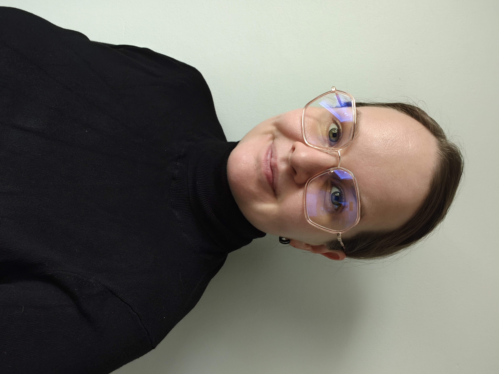

Emmi
Product Owner
Vastaa tuotteen visiosta, priorisoi kehitystehtävät ja huolehtii siitä, että tiimi rakentaa oikeita asioita.
Tässä on tiimi Maxin fanisivuston takana.

Product Owner
Vastaa tuotteen visiosta, priorisoi kehitystehtävät ja huolehtii siitä, että tiimi rakentaa oikeita asioita.

Chief Happiness Officer
Projektin todellinen tähti ja inspiraation lähde. Vastaa laadunvalvonnasta, karismaattisesta brändistä ja päivittäisestä motivaatiosta.

Scrum Master
Huolehtii tiimin yhteistyöstä, Scrum-prosessin sujuvuudesta ja projektin etenemisestä. Poistaa kehitystyön esteitä ja pitää kokonaisuuden hallinnassa.
Onko sinulla kysyttävää Maxista, kuvista tai hoito-ohjeista? Laita meille viestiä:
Sähköposti: maxin.tiimi@esimerkki.fi